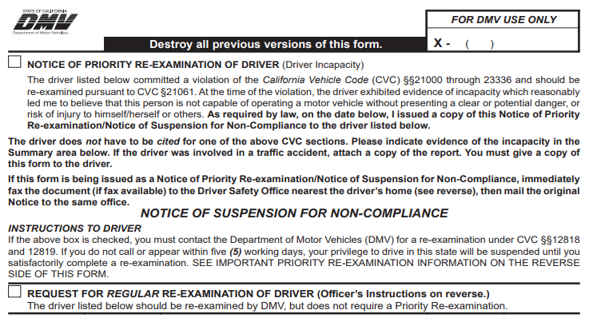

Eventually, every driver will need to evaluate and assess their driving skills and abilities. If you are concerned about your driving, ask a trusted driver with a valid driver’s license to sit in the passenger seat and observe your driving. Your observer should note any dangerous driving behaviors and give suggestions for improvement. Listen carefully and apply what you have learned. Consider professional driving lessons or driving classes as an alternative.
Reexamination
The Vehicle Code allows DMV to investigate and reexamine every driver’s ability to operate a motor vehicle safely. A physical or mental condition or poor driver’s record can be the basis for a reexamination, not a driver’s age. Drivers with a physical or mental condition can be referred to DMV by a physician, law enforcement, or family member by submitting a completed Request for Driver Reexamination (DS 699) form.
Cognitive disorders, such as dementia, seizure disorder, brain tumor, Parkinson’s disease, stroke, or vertigo, present a significant challenge to safe driving. Individuals suffering from these conditions may lose their ability to drive safely.
Note When a referral or diagnosis for a driver with a mild cognitive impairment is received by DMV, the Driver Safety team will schedule a reexamination. For more information regarding the reexamination process, visit dmv.ca.gov/reexamination.
DMV may do the following:
- Request medical information from you or your physician.
- Conduct an in-person or over the telephone reexamination.
- Require you to take a knowledge, vision, or driving test(s).
- Issue you a limited term driver’s license.
- Immediately suspend or revoke your driving privilege if your physical or mental condition presents an immediate threat to public safety.
- Take no action against your driving privilege.
Priority Reexamination
If you come in contact with law enforcement and receive a Notice of Priority Reexamination of Driver with a check mark in the top box, carefully read the form. You have five working days to contact DMV to initiate the process or your driving privilege will be automatically suspended.

Driver’s License Restrictions
DMV places restrictions on a driver’s license to ensure a driver is operating a vehicle within their ability. Restrictions may be imposed by DMV or required by law. Restrictions placed on your driving privilege will be reasonable and necessary for your safety and the safety of others. Restrictions and conditions may include:
- Requiring a driver to place special mechanical devices on their vehicle, such as hand controls.
- Limiting when and where a person may drive, such as no night or freeway driving.
- Requiring eyeglasses or corrective contact lenses.
- Requiring additional devices, such as outside mirrors.
Note There are no specific restrictions for seniors. All restrictions are based on conditions, not age.
Any restriction placed on your driver’s license is based on the examiner’s findings and recommendations.